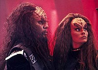
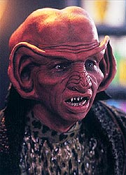
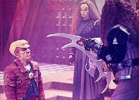
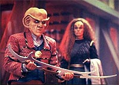
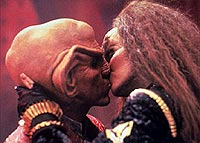

MANCHETE
DO EPISDIO
Ron
Moore faz milagre e cria uma boa
histria com Ferengis e Klingons
Episdio
anterior | Prximo
episdio
Sinopse:
Data Estelar:
desconhecida.
Os negcios vo mal para o bar do
Quark, com a ameaa do Dominion. O nico cliente da noite que
sobrou um Klingon bbado de nome Kozak. Kozak quer colocar a
sua conta "no pendura" e Quark obviamente no concorda
com isso. Kozak no gosta da recusa do Ferengi em lhe dar crdito
e saca sua faca. A luta entre os dois breve e Kozak acaba
caindo "de maduro" na sua prpria lmina e morrendo.
Logo chegam Bashir e Odo para investigar o ocorrido e uma multido
comea a se formar do lado de fora do Quarks, motivada por uma
curiosidade mrbida em saber mais da morte do Klingon.
Quark percebe uma oportunidade de ouro para aumentar os seus
lucros e comea a contar (e interpretar) uma histria em que ele
venceu o Klingon em combate. Apesar de Odo avisar que podem surgir
parentes do morto na estao para procurar por vingana, Quark
no liga, pois diz sempre poder contar a verdade se tal fato
acontecer e se inocentar, e se proclama: "Quark: o carrasco
dos Klingons!"
Keiko informa a OBrien que fechou permanentemente a sua escola
por falta de alunos --o Dominion est realmente assustando todo
mundo e o pessoal da estao est partindo em massa, da o
problema. OBrien sente a sua esposa muito triste e que ela est
em negao quanto a isso, no ter nenhuma funo em DS9,
muito menos ser uma botnica, a sua verdadeira profisso.

Logo
em seguida um Klingon (de nome D'Ghor, dizendo ser irmo de
Kozak) toma Quark de assalto e diz que veio procura da verdade,
que o assustado barman lhe d sem pestanejar. Entretanto o
Klingon indica que se ele morreu em um combate com honra no
haveria motivos para vingana. Quark concorda e continua com sua
farsa.
O'Brien planeja um jantar surpresa para Keiko, que parece aliviar
a angstia dela por um tempo, mas quando ele sai pra trabalhar na
manh seguinte, sente que nada mudou de verdade.
Em compensao, os negcios vo bem para Quark, com toda essa
histria de "carrasco Klingon". Eis que surge, no Quarks,
em uma noite aps o fechamento da casa, uma Klingon (Grilka, a viva
de Kozak) que tambm quer saber a verdade, que ela rapidamente
descobre e em seguida rapta Quark.
Em Kronos (mundo natal Klingon), Tumek (brao direito de Grilka)
conta a Quark que a mentira dele custou caro a Grilka. Se Kozak
tivesse morrido em um acidente, o Alto Conselho poderia ter
oferecido uma licena especial para ela tocar a sua
"Casa" por si prpria, mas como ele "morreu de
forma honrada em combate", isso no poder acontecer, e sem
herdeiros machos a Casa de Kozak ir runa e sua propriedade
ser tomada pela Casa de DGhor (que na realidade um inimigo
de longa data da Casa de Kozak, e que j testemunhou perante o
Alto Conselho Klingon sobre a "histria" de Quark).
Grilka joga uma cartada arriscada dentro da lei Klingon que
permite que aquele que matar um Klingon em combate honrado pode
tomar a sua viva e sua "casa". Grilka casa com Quark
em uma cerimnia instantnea.
Na DS9, O'Brien pede permisso a Sisko para transformar um hangar
de carga em um arboreto para Keiko cuidar e (espera ele) se sentir
til e feliz.
Grilka apresenta Quark ao Alto Conselho para surpresa de todos.
D'Ghor quer tomar todos os ativos da Casa de Kozak. Gowron fica em
dvida com esta confuso e diz que vai precisar de um tempo para
pensar e formaliza a Casa de Kozak como a Casa de Quark por ora. OBrien
e Bashir conversam e o doutor diz que o arboreto vai ser apenas um
paliativo e que Keiko nunca vai ser feliz se no puder ser uma
botnica de novo.

Quark,
percebendo que Grilka no tem mais nada na manga, se oferece para
rever os registros financeiros de sua "Casa". Quark
descobre imediatamente que DGhor vem atacando financeiramente e
de modo sistemtico a Casa de Kozak e agora tambm ficou como
cobrador de todas a dvidas de jogo do falecido Klingon. Quark
apresenta seus achados para o Alto Conselho Klingon. D'Ghor nega
tudo e traz evidncia (o prprio Rom) de que Quark no matou
Kozak e que o mesmo morreu em um acidente. D'Ghor demanda vingana
em combate pessoal, pelas "calnias" levantadas por
Quark.
O Ferengi, temendo pela sua vida, deixa a casa de Grilka, para a
decepo da Klingon, mas, uma conversa com seu irmo, sobre
"respeito", o deixa pensativo.
No dia seguinte Quark aparece para o combate com Bat'leth em
punho. Entretanto, logo no incio da contenda, ele joga a arma de
lado e se ajoelha e diz que no existe honra em permitir um
combate entre um Klingon e um Ferengi. No uma luta; uma
execuo. D'Ghor no liga a mnima e j se prepara para
decapitar Quark, mas Gowron intervm e diz agora acreditar nas
acusaes de Quark e ordena um banimento para D'Ghor, que sai em
desgraa. Gowron faz o melhor de todo este circo dando uma licena
especial para Grilka poder comandar a prpria casa. Agradecida,
ela concede o divrcio a Quark e lhe d um beijo de despedida.
De volta estao, O'Brien toma uma deciso difcil e
consegue uma vaga em uma misso de explorao agrobiolgica em
Bajor para Keiko (que vai poder levar Molly com ela, em uma misso
que pode durar at seis meses). Quando os O'Brien se beijam, Rom
pede que Quark conte novamente a histria do seu combate com
D'Ghor e, mesmo fingindo no ser l grande coisa, Quark no
pode deixar de pensar no respeito que ele conquistou aos olhos do
seu irmo.
Comentrios:
O bizarro encontro entre os Ferengis e os Klingons consegue
atingir resultados at satisfatrios (ainda que no fuja em
momento algum da categoria do "fofinho e inofensivo") e
seu desenrolar consegue at mesmo injetar um pouco de fibra na
pessoa de Quark. O episdio ainda traz O'Brien (o "homem
comum" de DS9), em uma pequena, doce e honesta histria
sobre o seu crnico problema conjugal (que chega a uma importante
resoluo aqui). Saibam mais detalhes, sem precisar matar um
Klingon e desposar a viva do falecido no processo, nas linhas
abaixo.
Ainda que a meno aos eventos de "The
Search" seja um pouco tmida no episdio, as reaes
da populao da estao frente ameaa do Dominion fazem
bastante sentido e levam ao declnio dos lucros de Quark e ao
fechamento da escola de Keiko. Este o nico elemento (alm de
ambas tratarem de temas familiares) que as duas histrias
apresentadas no curso do segmento tm em comum.

A
menor, mais sria e mais bem-sucedida das duas histrias do episdio
aquela que envolve o casal O'Brien, cujas razes dos seus
problemas conjugais so claras para a audincia desde o piloto
de DS9 ("The
Emissary"): Keiko abriu mo de sua profisso para
viver com o marido (promovido e transferido) em DS9. Tal problema
trazido claramente tona e tratado de uma forma sensvel e
sincera.
A maneira diferente como Sisko e Bashir tentam ajudar O'Brien
totalmente condizente com a relao que o chefe tem com cada um
deles e o fato de Bashir ser mais efetivo s refora essa idia.
Foi tambm bastante interessante (e irnico) ver justo Bashir
dando conselhos maritais para O'Brien, especialmente luz do que
foi discutido pelos dois em "The
Armageddon Game". A deciso final de O'Brien faz
sentido em termos de razo e emoo. Quanto a essa histria
(entre Keiko e O'Brien) somente a pequena cena residual envolvendo
Kira e Dax salta aos olhos como realmente fraca. Tivemos uma tima
"despedida" para Keiko (e Molly).
Um encontro entre os Ferengis e os Klingons tinha tudo para se
tornar um fracasso colossal. Felizmente foi trilhado um caminho
moderado em que fica bem entendido desde o incio que a maior
piada simplesmente colocar os dois diametralmente opostos modos
de vida lado a lado e ver o que acontece (e o roteiro faz um bom
trabalho em justificar tal encontro a maior parte do tempo).
Fortaleceu o episdio termos elementos a bordo que apontam para
um importante (e srio) evento: duas grandes Casas rivais, uma
figura nobre e extremamente leal a Grilka (Tumek), toda a
estrutura de poder Klingon (o "Grande Salo Klingon", o
Alto Conselho e o Chanceler Gowron) e mesmo o banimento de D'Ghor
no final.

Kozak
foi pattico (felizmente isto fazia parte da premissa do episdio
--levantar a questo da "honra Klingon" ser mais uma
ferramenta de marketing para os estrangeiros, do que qualquer
outra coisa) e mal atuado (isso nunca faz parte de premissa
nenhuma). D'Ghor foi definitivamente o elo fraco, um vilo
absolutamente bidimensional sem a menor qualidade redentora e a
atuao de Carrasco no ajudou em nada tambm (em mos mais
capazes uma escolha mais cmica poderia funcionar dentro do
contexto do segmento, o personagem como apresentado foi
simplesmente "um saco" de se assistir do comeo ao
fim). A extrema transparncia de D'Ghor, que sem pestanejar iria
executar Quark ao final, foi a pior coisa dessa parte da histria
(e "uma fcil sada" para os produtores, devo
reconhecer).
Faltou Grilka dentre os Klingons. Uma boa coisa do roteiro foi no
mostrar (um grande clich para "histrias com vivas",
por sinal) Grilka se lamentando pelos seus anos com Kozak,
implicitamente difceis, ou mesmo por sua perda, implicitamente
um alvio. Ela parece acreditar realmente no conceito da
sociedade Klingon e s querer seguir com sua vida sem mgoa ou
ressentimento (uma noo positiva e interessante). O final, em
que Gowron d permisso para ela cuidar de sua prpria
"casa", parece entender e passar esta noo. Ela vai
liderar uma "casa" que aparentemente ela j vinha
liderando h muito tempo (se considerarmos a "ficha
corrida" do defunto).
No foi suficiente que Quark tivesse derrotado D'Ghor na
"arena Ferengi", ele precisava tambm faz-lo na
"arena Klingon". Ele o fez sim, mas no pelo combate
(que equivaleria a um suicdio), mas com um apelo
"honra" que aquele local (teoricamente) deveria
representar. Ele no deu uma soluo fcil para Gowron e o
resto do conselho, que vivia de um lder de uma grande
"Casa" matando um outro, mas os fez pensar no que
realmente estava em jogo ali (alm do transparente D'Ghor ter
dado uma "fora" no final, para que Gowron tomasse tal
deciso, claro). Rom foi um fiel escudeiro e um bom irmo
para Quark (o que foi o suficiente para os propsitos do episdio).

Les
Landau usualmente um diretor com um toque suave, tanto no trato
da cmera. quanto no dos personagens, o que casa muito bem com o
presente episdio. O diretor parece incentivar o trabalho dos
atores ao fundo das tomadas, o que pode ser visto com clareza nas
reaes da multido quando Quark conta pela primeira vez a sua
histria no bar. Foi uma tima idia comear e terminar o episdio
com cenas gmeas, com Rom e Quark no bar. sempre um prazer
reencontrar o cenrio do "grande salo Klingon".
Talvez a nica real patinada de direo tenha sido a forma como
a tristeza de Keiko foi capturada no incio, olhando paras as
suas plantas nos seus aposentos. Foi meio grosseiro.
Shimerman trabalhou muito bem com Kay Adams (existe uma coisa bem
fluida entre os dois) e com Grodnchik, a primeira vez que Quark
conta a histria foi interessante e a cena final do combate foi o
seu ponto alto.
Meaney tambm foi muito bem. Os jantares e o projeto do arboreto
poderiam soar extremamente chauvinistas em mos menos capazes.
Meaney nos faz acreditar integralmente na sinceridade do
personagem o tempo todo. Um grande bnus vai para a expresso de
absoluta descrena de El Fadil quando Quark conta a sua histria
pela primeira vez. Os demais regulares s cumpriram tabela.
Kay Adams mostrou bastante carisma e boa qumica com Shimerman
(alm de no demonstrar nenhum pudor em cenas mais
"esquisitas" como a do "casamento", com
direito a uma rpida faca na garganta do "noivo" e a do
divrcio --a "cena da mo na coxa" foi tima).
Ruskin, alm de ter "a voz", trouxe tambm uma bela
atuao. O'Reilly foi uma boa presena, com seus olhos
infinitamente abertos e uma atitude ponderada. Grodnchik segurou
o seu lado mais histrinico esta semana e definitivamente foi
mais interessante de assistir. Chao honrou o pagamento e Carrasco
e Bennett foram simplesmente pssimos.
Acredito que o ritual realizado por Grilka corresponda
"verso Las Vegas" da cerimnia de casamento Klingon.
Em "You Are Cordially Invited", da sexta
temporada, vamos ver um real casamento Klingon (entre Worf e
Jadzia Dax), com uma cerimnia extremamente complexa.
Para os que acharam absurdo o encontro de Quark (e dos Ferengis)
com os Klingons, se preparem para o encontro dos Ferengis com os
Profetas em "Prophet Motive", nesta mesma
temporada.
No sou da segurana da Frota Estelar, mas tivemos mais um rapto
na estao esta semana. Por onde andar o tenente-comandante
Eddington?
Uma sociedade que preza tanto a honra quanto a sociedade Klingon,
teria de ter uma "equipe forense de honra" (ou coisa
parecida) para determinar o que acontece realmente em mortes como
a de Kozak. Seria interessante ver tal "equipe" em operao
aqui. Uma boa desculpa para a sua no-utilizao aqui tambm
seria bem-vinda. Ser a ausncia de tal "equipe" mais
um indcio de que esta histria de "honra Klingon"
mais propaganda do que qualquer outra coisa, como o episdio
sugere por vrias vezes?
difcil imaginar que no existam contadores Klingons (apesar
do velho clich de "pasteurizao das raas" em Jornada
sempre querer dizer o contrrio). Eles definitivamente devem
sofrer um extremo preconceito, mesmo que teoricamente estejam
tentando defender o Imprio e viver com honra ao seu modo e no
seu trabalho. Vamos conhecer um advogado Klingon em "The
Rules of Engagement", da quarta temporada de DS9.
"The House of Quark" um bom episdio que
consegue fazer funcionar (em sua histria principal) uma premissa
extremamente arriscada: o encontro entre os Ferengis e os
Klingons. Estabelecendo situaes e deixando a comdia nascer
destas situaes naturalmente (a maior parte do tempo), o episdio
traz bom entretenimento, ainda que tenha a "consistncia de
um marshmellow derretido" (TM). Dito isto, o real destaque da
semana vai para a pequena jia de histria (secundria)
envolvendo a famlia OBrien, que chega a uma satisfatria
concluso aqui.
Citaes
Quark - "When Morn
leaves, it's all over."
("Quando o Morn sai, est tudo acabado.")
Bashir - "You can't ask her to turn a profession into a
hobby."
("Voc no pode pedir que ela transforme uma profisso em
um hobby.")
Quark - "I am Quark, son of Keldar. And I have come to
answer the challenge of D'Ghor, son of... whatever."
("Eu sou Quark, filho de Keldar. E eu vim responder ao
desafio de D'Ghor, filho de... o que seja.")
Grilka- "How can I repay you?"
("Como posso recompens-lo?")
"I would like a divorce, please, no offense."
("Eu gostaria do divrcio, por favor, sem ofensas.")
Trivia:
 Aps o seu primeiro roteiro em DS9, "The
Search, Part I", Ron Moore j tem uma nova tarefa e
agora em um assunto em que ele conhece como ningum. De fato, aps
escrever "Sins of the Father" (clssico da
terceira temporada de A Nova Gerao), um verdadeiro
divisor de guas para a espcie de Worf, Ron passou a ser
referido pelos seus colegas de staff como o "guru dos
Klingons".
Aps o seu primeiro roteiro em DS9, "The
Search, Part I", Ron Moore j tem uma nova tarefa e
agora em um assunto em que ele conhece como ningum. De fato, aps
escrever "Sins of the Father" (clssico da
terceira temporada de A Nova Gerao), um verdadeiro
divisor de guas para a espcie de Worf, Ron passou a ser
referido pelos seus colegas de staff como o "guru dos
Klingons".
A histria do episdio foi sugerida pelo editor (montador) Tom
Benko: "Quark mata um Klingon em defesa prpria, ganha fama
de pistoleiro e tenta lucrar com tal situao". Ron admite
que o staff de A Nova Gerao sempre tentou se afastar um
pouco do humor em seu produto final e que ele sempre quis explorar
um lado mais cmico envolvendo os Klingons e agora (com a histria
de Benko) a chance parecia finalmente ter surgido. Benko teve uma
experincia nica em montar uma histria em que ele produziu o
conceito.
Ainda que a transio do personagem Gowron (Chanceler do Imprio
Klingon), de A Nova Gerao para DS9, no
estivesse planejada a priori, isso surgiu de uma forma natural e
deixou o seu interprete Robert O'Reilly bastante animado. Ele
admite que trabalhar em uma nova srie sempre uma fonte de
apreenso pessoal, o que foi bastante amenizado com a presena
de um velho conhecido, Armim Shimerman. Um detalhe: devido
utilizao de fumaa, para aumentar a atmosfera das filmagens,
o ar-condicionado fora desligado, tornando a situao bastante
desagradvel para os atores debaixo da maquiagem e das vestes
pesadas, fossem eles Klingons ou Ferengis.
Gowron aparece nos seguintes episdios de DS9: "The
House of Quark" (temporada 3), "The Way of the
Warrior" (duplo da temporada 4), "Broken
Link" (temporada 4), "Apocalypse Rising"
(temporada 5), "By Inferno's Light" (temporada
5), "When It Rains..." (temporada 7), "Tacking
Into the Wind" (temporada 7). O'Reilly viria a fazer um
contador em "Badda-Bing, Badda-Bang" (da
temporada 7 e creditado como Bobby Reilly).
Gowron apareceu anteriormente nos seguintes episdios de A
Nova Gerao "Reunion"
(temporada 4), "Redemption,
Part I" (temporada 4), "Redemption,
Part II" (temporada 5) e "Rightful Heir"
(temporada 6). O'Reilly tambm trabalhou em "Manhunt"
(da temporada 2).
Eis que em meio a fumaa das filmagens surge o renomado fsico
ingls Stephen Hawking junto com Rick Berman. Armim ficou feliz
de v-lo e at conseguiu uma foto com ele com recordao. Mas
a maioria da equipe de apoio estava mesmo surpresa em ver Berman
na filmagem.
Para contar com o "Grande Salo Klingon" no episdio e
manter os custos dentro do oramento (o duplo "The
Search" custou bastante), o produtor-supervisor David
Livingston sugeriu um mtodo: trabalhar apenas com metade do cenrio
de cada vez e organizar as filmagens de forma que (com o auxlio
do diretor do episdio, Les Landau) tudo se torna uma perfeita
iluso para a audincia (imaginando que todo o cenrio
estivesse realmente l). Moore insistiu na construo do cenrio
e em colocar Quark l.
Os crditos do episdio (como em muitas ocasies em Jornada
nas Estrelas) nunca so completos, aqui todos os roteiristas
"meteram a colher". Por exemplo, foi idia de Robert
Hewitt Wolfe o final em que Quark joga o Bat'leth para o lado e
fica de joelhos como se esperando uma execuo.
Ver os Klingons confusos com tanto clculo foi idia de Moore,
mas foi O'Reilly que teve a idia de jogar a calculadora longe.
Foi do ator tambm a idia das palavras finais do Chanceler para
Quark.
Este episdio foi originalmente conhecido como "Fight to
the Death" e tem uma citao da famosa "sopa
Plomeek Vulcana" (do episdio "Amok Time"
da segunda temporada da Srie Clssica), que Bashir
mostra gostar muito.
Tumek foi vivido por Joseph Ruskin, que participou como Galt de "The
Gamesters of Triskelion", da segunda temporada da Srie
Clssica. Ruskin retornou nesta mesma temporada de DS9
para fazer um informante Cardassiano em "Improbable
Cause". Alm disso, viveu um oficial Son'a no filme "Insurreio"
e um mestre Vulcano em "Gravity" (da quinta
temporada de Voyager).
Mary Kay Adams conhecida dos fs de "Babylon 5" por
ter vivido um das verses da personagem Narn Na'Toth, assistente
de G'Kar (personagem de Andreas Katsulas, que tambm j viveu o
Romulano Tomalak em Jornada). Ruskin e Kay Adams retornam
com seus personagens em "Looking For Par'Mach In All The
Wrong Places", da quinta temporada de DS9.
Carlos Carrasco tambm participa de "Shattered
Mirror" (da quarta temporada de DS9, como um
oficial Klingon), "Honor Among Thieves" (da sexta
temporada de DS9, como Krole) e em "Fair
Trade" (da terceira temporada de Voyager, como
Bahrat).
John Lendale Bennett retorna nesta temporada mesmo, como Gabriel
Bell, em "Past Tense, Part I". Depois ele
pareceria novamente como um Klingon em "Apocalypse
Rising" (que abre a quinta temporada de DS9).
Este episdio marca a "despedida de Keiko e Molly da estao".
Elas apareceriam apenas esporadicamente daqui pra frente. Isto
abriu caminho para a carreira cinematogrfica de Colm Meaney e
para o aprofundamento da amizade entre Bashir e O'Brien, um dos
maiores desejos de Ira Steven Behr.
Ficha
tcnica:
Histria de Tom Benko
Roteiro de Ronald D. Moore
Direo de Les Landau
Exibido em 10/10/1994
Produo: 049
Elenco:
Avery Brooks como
Benjamin Lafayette Sisko
Ren Auberjonois como Odo
Nana Visitor como Kira Nerys
Colm Meaney como Miles Edward O'Brien
Siddig El Fadil como Julian Subatoi Bashir
Armin Shimerman como Quark
Terry Farrell como Jadzia Dax
Cirroc Lofton como Jake Sisko
Elenco convidado:
Rosalind Chao
como Keiko O'Brien
Mary Kay Adams como Grilka
Carlos Carrasco como D'Ghor
Max Grodnchik como Rom
Robert O'Reilly como Gowron
Joseph Ruskin como Tumek
John Lendale Bennett como Kozak